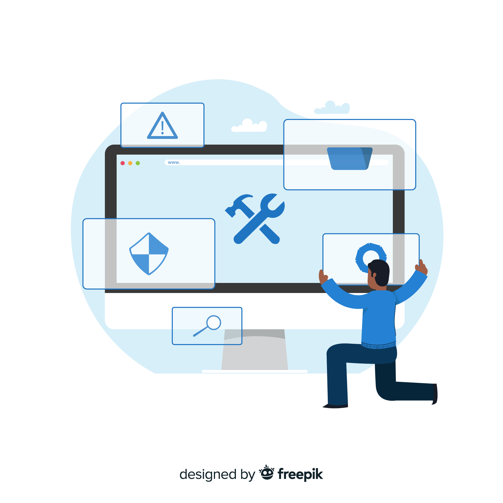
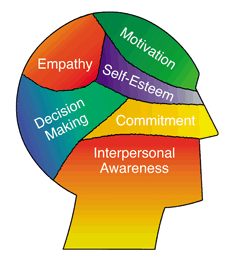

Bill Pham Portfolio
About Me
 🔎+
🔎+
I am an enthusiastic and dedicated IT student with hands-on experience in troubleshooting hardware, software, and network issues in real-world environments. Currently studying Certificate IV in Cyber Security, I have a strong foundation in technical support, customer service, and IT asset management.
My background includes an internship as a Networking Administrator, where I honed my problem-solving and communication skills while assisting users and managing critical systems. I am passionate about staying current with technology trends, continuously learning, and contributing to collaborative teams.
I’m driven to help organisations and clients achieve their goals through reliable, effective IT solutions.
Education
Certificate IV in Cyber Security (08/2025 -- now)
Swinburne University of Technology - TAFE
Certificate III in Information Technology (07/2025)
Swinburne University of Technology - TAFE
My Skills
Diagnostic and Troubleshooting
Diagnosed and resolved hardware, software and network issues efficiently; including documentation for future reference

System and Network Configuration
Configured network devices and tested connectivity, including security settings, access control and group policy
Network Design and Configuration
Proficient in working with Cisco Packet Tracer to design networks and configure network devices

Proficiency in Operating Systems
Proficient in working with different Operating Systems, including Windows OS and Ubuntu OS, as well as virtualisation

Transferable Skills and Experience
Acquired interpersonal, communication and teamwork skills through work and networking experience
My Experience
Internship history:
Networking Administrator (02/2021 -- 05/2021)
TasCollege, Hobart, Tasmania
- Assisted colleagues and students with basic troubleshooting and network configuration on Windows 10 computers, including resolving Wi-Fi connectivity issues, performing system updates, and installing software
- Utilised connectivity testing tools, including ping and tracert/traceroute, to identify and resolve network issues effectively
- Documented network and system changes to ensure consistency and facilitate future troubleshooting
- Developed strong problem-solving and technical communication skills in a collaborative environment
Visit my GitHub site or My Works page to review my works
- GitHub: https://github.com/billpham995↗️
- My Works Page: billpham995.github.io/work.html↗️
Get in touch for tech-related chats
© Portfolio created by Bill (Hoang Thong) Pham 2026